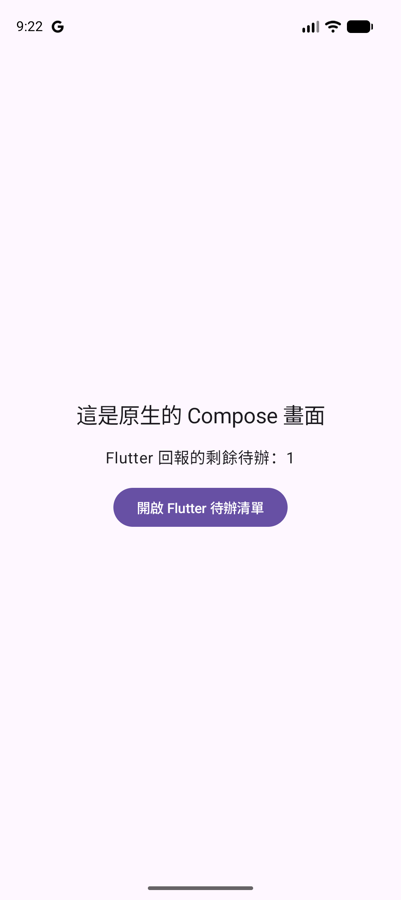
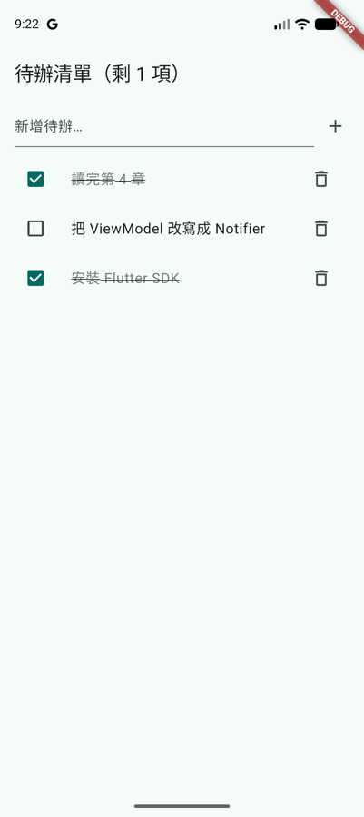

第 6 章 · 與 Android 串接
Add-to-app
前面幾章都是「整個 App 用 Flutter 寫」。但很多團隊手上已經有一個大型的 Android App，不可能一次重寫。Add-to-app 就是反過來：把 Flutter 當成一個模組，放進既有的 Android App 裡，先用 Flutter 寫一兩個新畫面，再慢慢擴大範圍。
範例：把待辦清單放進原生 App
說明範例在 samples/add_to_app/，有兩個專案：
android_host/：一個普通的 Compose App，代表「既有的 Android App」。todo_module/：Flutter 模組，畫面直接沿用前幾章做好的todo_app。
原生畫面按下按鈕後開啟 Flutter 的待辦清單；在 Flutter 裡勾選項目，回到原生畫面時，「剩餘待辦」的數字已經同步更新：


執行方式：先在 todo_module/ 執行 flutter pub get，再用 Android Studio 開啟 android_host/，或在命令列建置：
cd samples/add_to_app/todo_module
flutter pub get
cd ../android_host
./gradlew :app:installDebugFlutter 模組與 Flutter App 的差別
說明用 flutter create -t module 建立的是模組。它和一般 Flutter App 的 Dart 程式碼寫法完全一樣，差別在 Android 專案的部分：
| Flutter App | Flutter 模組 | |
|---|---|---|
| Android 專案 | android/，進版本控制，可以自由修改 | .android/，由 flutter pub get 自動產生，不進版本控制，不要手動修改 |
| 產出 | 可以安裝的 APK / AAB | 一個 Android library，給別的 App 使用 |
| 原生程式碼寫在哪 | android/app/src/ | 宿主 App 裡 |
把模組接進 Gradle
說明有兩種方式可以讓宿主 App 使用 Flutter 模組：
| 方式 | 做法 | 適合的情況 |
|---|---|---|
| 原始碼引入（本範例） | 在 settings.gradle.kts 引入模組的 include_flutter.groovy，宿主建置時一起編譯 Dart 程式碼 | Android 開發者也會改 Flutter 程式碼；可以用 flutter attach 做 hot reload |
| AAR | 在模組執行 flutter build aar，產生 debug/profile/release 三組 AAR，放到 Maven repository 給宿主依賴 | 宿主團隊的電腦不想安裝 Flutter SDK；Flutter 模組由另一個團隊發版 |
原始碼引入的設定只有兩處。settings.gradle.kts 套用模組產生的 script，它會建立名為 :flutter 的 Gradle 專案：
另外要在 AndroidManifest.xml 宣告 FlutterActivity，它來自 Flutter 的 embedding 函式庫：
FlutterEngine：先暖機，再顯示
說明每個 Flutter 畫面背後都有一個 FlutterEngine，負責執行 Dart 程式碼和繪製畫面。建立引擎、載入 Dart 程式碼需要一點時間；如果等使用者按下按鈕才開始，畫面會先空白一下。
常見做法是在 Application.onCreate 就建立引擎、執行 Dart 的 main()，放進 FlutterEngineCache。之後開啟 Flutter 畫面時，直接拿快取裡已經在跑的引擎：
兩邊用的是上一頁的 MethodChannel，名稱都是 f4k/host。因為引擎一啟動就執行 main()，HostBridge 會立刻回報剩餘數量，所以原生畫面在使用者打開 Flutter 之前就已經顯示「2」。
暖機的代價是記憶體：引擎從 App 啟動起就一直存在。要不要預先建立，取決於 Flutter 畫面有多常被打開。
顯示 Flutter 畫面的三種方式
說明| 方式 | 說明 |
|---|---|
FlutterActivity | 整個畫面都是 Flutter，最簡單。withCachedEngine(id) 使用快取的引擎；withNewEngine() 每次建立新引擎，可以用 initialRoute 指定起始路由 |
FlutterFragment | Flutter 只佔畫面的一部分，或放在既有的 Fragment 導航裡。宿主 Activity 要把 onBackPressed、onTrimMemory 等事件轉給 fragment |
FlutterView | 最底層，自己管理 FlutterEngine 的 attach/detach 與生命週期。例如在 Compose 裡用 AndroidView { FlutterView(it) } 嵌入一小塊 Flutter UI |
同一個引擎同一時間只能顯示在一個地方。要同時顯示多個 Flutter 畫面（例如 ViewPager 的每一頁），用 FlutterEngineGroup 建立多個引擎：同一組裡的引擎共用 Dart 程式碼與 GPU context，每多一個引擎只增加少量記憶體。
實務注意事項
說明- Hot reload：從 Android Studio 執行宿主 App 後，在模組目錄執行
flutter attach，就能對 Flutter 畫面 hot reload。 - Plugin：模組用到的 Flutter plugin（例如 drift 的 sqlite）會自動加進宿主，
FlutterEngine建立時也會自動註冊，不需要額外設定。 - 建置類型：Flutter 只有 debug、profile、release 三種模式。宿主有自訂的 build type（例如
staging）時，要用matchingFallbacks對應到其中一種。 - App 大小：加入 Flutter 會增加引擎與 Dart 程式碼的大小，release 版大約多數 MB，第 8 章會說明怎麼量測。
- iOS 也能做同樣的事：同一個 Flutter 模組可以嵌入 iOS App，做法見第 7 章。